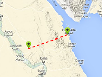

Example how to draw a dotted line in tileset.
Requirement: Tileset Control
Usage instructions:
Add this script to map GameObject.
Add this script to map GameObject.
DottedLineExample.cs
/* INFINITY CODE 2013-2016 */
/* http://www.infinity-code.com */
using System.Collections.Generic;
using UnityEngine;
namespace InfinityCode.OnlineMapsExamples
{
[AddComponentMenu("Infinity Code/Online Maps/Examples (API Usage)/DottedLineExample")]
public class DottedLineExample : MonoBehaviour
{
/// <summary>
/// The thickness of the line.
/// </summary>
public float size = 10;
/// <summary>
/// Scale UV.
/// </summary>
public Vector2 uvScale = new Vector2(2, 1);
/// <summary>
/// The material used for line drawing.
/// </summary>
public Material material;
private Vector2[] coords;
private MeshFilter meshFilter;
private MeshRenderer meshRenderer;
private Mesh mesh;
private float _size;
private void Start()
{
// Create a new GameObject.
GameObject container = new GameObject("Dotted Line");
// Create a new Mesh.
meshFilter = container.AddComponent<MeshFilter>();
meshRenderer = container.AddComponent<MeshRenderer>();
mesh = meshFilter.sharedMesh = new Mesh();
mesh.name = "Dotted Line";
meshRenderer.material = material;
// Init coordinates of points.
coords = new Vector2[5];
coords[0] = new Vector2();
coords[1] = new Vector2(3, 0);
coords[2] = new Vector2(3, 3);
coords[3] = new Vector2(4, 4);
coords[4] = new Vector2(1, 6);
// Subscribe to events of map.
OnlineMaps.instance.OnChangePosition += UpdateLine;
OnlineMaps.instance.OnChangeZoom += UpdateLine;
// Initial update line.
UpdateLine();
}
private void Update()
{
// If size changed, then update line.
if (size != _size) UpdateLine();
}
private void UpdateLine()
{
_size = size;
float totalDistance = 0;
Vector3 lastPosition = Vector3.zero;
List<Vector3> vertices = new List<Vector3>();
List<Vector2> uvs = new List<Vector2>();
List<Vector3> normals = new List<Vector3>();
List<int> triangles = new List<int>();
List<Vector3> positions = new List<Vector3>();
for (int i = 0; i < coords.Length; i++)
{
// Get world position by coordinates
Vector3 position = OnlineMapsTileSetControl.instance.GetWorldPosition(coords[i]);
positions.Add(position);
if (i != 0)
{
// Calculate angle between coordinates.
float a = OnlineMapsUtils.Angle2DRad(lastPosition, position, 90);
// Calculate offset
Vector3 off = new Vector3(Mathf.Cos(a) * size, 0, Mathf.Sin(a) * size);
// Init verticles, normals and triangles.
int vCount = vertices.Count;
vertices.Add(lastPosition + off);
vertices.Add(lastPosition - off);
vertices.Add(position + off);
vertices.Add(position - off);
normals.Add(Vector3.up);
normals.Add(Vector3.up);
normals.Add(Vector3.up);
normals.Add(Vector3.up);
triangles.Add(vCount);
triangles.Add(vCount + 3);
triangles.Add(vCount + 1);
triangles.Add(vCount);
triangles.Add(vCount + 2);
triangles.Add(vCount + 3);
totalDistance += (lastPosition - position).magnitude;
}
lastPosition = position;
}
float tDistance = 0;
for (int i = 1; i < positions.Count; i++)
{
float distance = (positions[i - 1] - positions[i]).magnitude;
// Updates UV
uvs.Add(new Vector2(tDistance / totalDistance, 0));
uvs.Add(new Vector2(tDistance / totalDistance, 1));
tDistance += distance;
uvs.Add(new Vector2(tDistance / totalDistance, 0));
uvs.Add(new Vector2(tDistance / totalDistance, 1));
}
// Update mesh
mesh.vertices = vertices.ToArray();
mesh.normals = normals.ToArray();
mesh.uv = uvs.ToArray();
mesh.triangles = triangles.ToArray();
// Scale texture
Vector2 scale = new Vector2(totalDistance / size, 1);
scale.Scale(uvScale);
meshRenderer.material.mainTextureScale = scale;
}
}
}